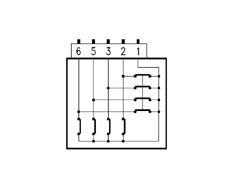
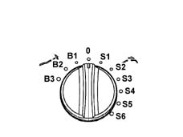
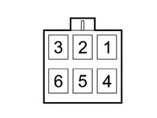

7030BA CHECK ON CONDITION OF SUN ROOF SELECTOR
- Path
- Test > 70 FITTINGS > 7030 SUN ROOF AND HOOD > 7030B sliding roof > 7030BA CHECK ON CONDITION OF SUN ROOF SELECTOR
- Kind
- test / check procedure
- Applies to
- all engines; all production periods
- Interactive page
- https://sloeber94.github.io/elrnDB-a147/en/#/3026082
Applies to: all engines; all production periods
Using a multimeter in ohmmeter mode, check the operation of the selector in accordance with the table below.
POSITION S6:
- Pin 2-1 = C
- Pin 3-1 = C
- Pin 5-1 = C
- Pin 6-1 = A
POSITION S5:
- Pin 2-1 = C
- Pin 3-1 = C
- Pin 5-1 = A
- Pin 6-1 = A
POSITION S4:
- Pin 2-1 = C
- Pin 3-1 = C
- Pin 5-1 = A
- Pin 6-1 = C
POSITION S3:
- Pin 2-1 = C
- Pin 3-1 = A
- Pin 5-1 = A
- Pin 6-1 = C
POSITION S2:
- Pin 2-1 = C
- Pin 3-1 = A
- Pin 5-1 = A
- Pin 6-1 = A
POSITION S1:
- Pin 2-1 = C
- Pin 3-1 = A
- Pin 5-1 = C
- Pin 6-1 = A
POSITION 0:
- Pin 2-1 = C
- Pin 3-1 = A
- Pin 5-1 = C
- Pin 6-1 = C
POSITION B1:
- Pin 2-1 = A
- Pin 3-1 = A
- Pin 5-1 = C
- Pin 6-1 = C
POSITION B2:
- Pin 2-1 = A
- Pin 3-1 = A
- Pin 5-1 = C
- Pin 6-1 = A
POSITION B3:
- Pin 2-1 = A
- Pin 3-1 = A
- Pin 5-1 = A
- Pin 6-1 = C
KEY:
- A = Switch Open
- C = Switch Closed
Functional diagram of internal connections of selector

Positions of sunroof control selector:

S1 - S6, Retracted positions 0, roof closed position B1 - B3, tilt positions
View of selector connector

RESETTING THE CONTROL UNIT MEMORY
After carrying out the test in reference, having disconnected the power supply, reset the movements memory as follows:
- move the selector to maximum tilt position (end of anticlockwise rotation B3);
- press the selector down vertically and hold in this position until the roof stops in maximum tilt position (the racks move back by about one centimetre once the maximum position is reached);
- release the selector and depress the selector again within five seconds and hold down;
- wait for the roof to complete its full travel, from maximum tilt to maximum slide - from maximum slide to closed;
- release the selector, moving it to the roof closed position '0'.
The control unit memory is now reset.